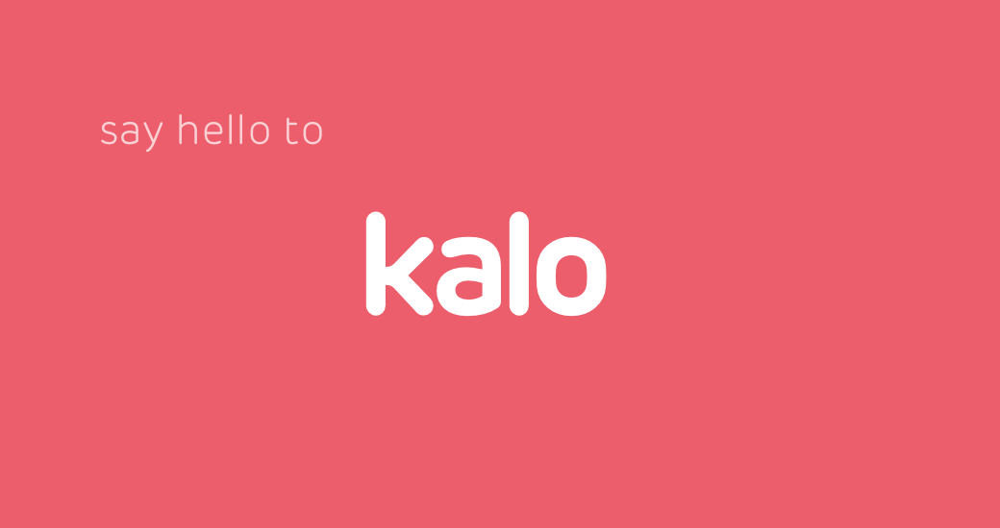

3. To be named
This is a sprintly summary of upcoming, delivered and in-progress work for the Infra DX Crew.
It’ll contain technical musings,and probably a few memes. TLDR
- A new Release Watch section on the blog to retrospect releases with hiccups.
- Lots of progress on PaaS which Yannis will be giving a run through of on Monday!
- Feature flag service deployed.
- Code splitting showing good trends with a ~20% reduction in initial bundle so far.
- Documentation: Strategy and specific form documentation delivered.
- Netflix functionality officially DEAD on the front-end.
- Rebrand! Rebrand! Rebrand!
Intro

The last sprint certainly had some interesting bumps (and a lot of 🍻) but beyond all that we have a new name! The rebrand is pretty much going to take over a few people’s sprint this week which is a shame, but we’ve put a lot of effort into planning to make sure it doesn’t spiral out of control.
This sprint update is coming a little late owing to some illness so we’re already over half way through already!
What we worked on
Where has our focus been?
PaaS
More work than can fit in an update has been delivered on this front and Yannis will be delivering this in a presentation/demo/slides format soon!
From Yannis himself:
A brave new world of more control is approaching, and that’s not only for new services…! Stay tuned for the scheduled update on Monday 4.30pm UK time in the London kitchen.
Documentation
- We published our mid-term strategy for documentation. You can read it in the gist here!
- We delivered documentation all about how we approach forms on the front-end. This covers everything from the theory to the various abstractions we have in place to help build forms in our applications. You can find the entry point to these docs here.
Code splitting
Some considerable work has gone into updating how we bundle together our applications and deliver them to the user. This is all working towards faster AND more sustainable [at scale] load times.
You can follow along on the Pull Request though it’s pretty wip atm.
Some highlights:
- Using an extracted manifest to leverage browser cache better when only part of the application updates
- A specific “vendor” bundle to, again, leverage browser cache when our dependencies aren’t changing
- Targeting some duplicated/fat dependencies
- Lots more tweaking to be done to minimize initial load of main app bundles.
- Further identified/scoped work
- Use prefetching/preloading to speed up load times even further. INFRA-85
- Parallelize loading of bundles and data those bundles will require when they can initialise
Netflix GONE
We’ve officially removed the last netflix-specific features from the UI.
Marketing site consolidations
With AlexP’s invaluable help in migrating the index page from lystable/lystable to lystable/eros we switched the primary S3 bucket in the Nginx proxy to be lystable/eros and we now only need to migrate the last few pages from lystable/lystable until we can kill it forever!!
Tracked here
Release Watch
This is a recurring section retrospecting any releases which didn’t seem to go as smoothly as we would’ve liked.
Backend
Releases this week have been as light as…… a kalo leaf!

- Number of minor releases: 6
- Number of hotfix releases: 1
- Average release time for backend: 70 minutes
- Maximum release time: 90 minutes
Frontend
Frontend have been a bit of a mix, with a couple reaching lava speed

- Number of minor releases: 4
- Number of hotfix releases: 0
- 50% of the releases averaged: 60 minutes
- 50% of the releases were at: 24 hours
Takeaways this week
Focus on:
- Early integration testing
- Early user testing or imperfect releasing with hotfix release to achieve the ideal design shortly after
- More frequent releasing, to avoid needing to identify which feature PR the error was caused by the natural assumption in this case was the error came from the dominant PR which consisted 98% of the code changes, but we were wrong… !
Work for Infra-DX
- Giving early emphasis to flakey failures which hopefully Chris’ work on tracking flakey tests will help
What’s up next?
What’s the plan, batman?
Rebrand! Rebrand! Rebrand!
We’re doing our best to roll out all the infrastructure we can, in advance of the launch time, to minimise the buttons we have to press at the final moments of “Lystable”, to reduce the moving parts and any potential risks.
Plan of action
- We’ll be testing all of the infra, platform and marketing changes on staging (kalohq.ink!) on Friday 19th
- We’ll rollout the new marketing site to production on new S3 buckets and side by side on the Nginx proxy
- Come launch time, which is 1pm on Monday 22nd, we’ll rollout: backend, frontend, Nginx redirects… simples!
Tracked here.
More Performance Drive
Just a continuation of the ongoing performance focus. The ultimate goal for this sprint is to have a) scalable front-end builds and b) we have identified and scoped work to improve data performance everywhere.
E2E retries and insights
Browser based e2e tests are always going to have some level of flakiness. They cover your entire stack and are prone to difficult to predict environmental issues.
Often we get into the habit of seeing an e2e failure and “just hitting rebuild”. We want to avoid this and be able to efficiently tackle areas of flakiness to push ourselves to the best possible situation.
For this we have planned two things:
- Automatically retry failed scenarios. If it fails twice in a row we consider this a true failure and if it passes second time we class this as a flake failure. The author of these builds will be notified as such.
- Track all these failures with our new tracking api. This should help us identify sources of problems as well as give us the best priorities to tackle.
Insert witty ending
Way too tired for a full conclusion this week. As always feel free to reach out and chat about anything from above!
Thanks for reading!
Chris